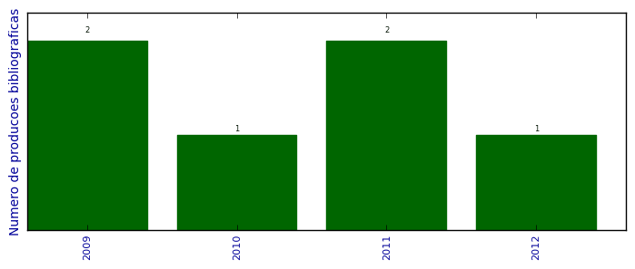

UFSM - Análise do Lattes
Total de produção bibliográfica

Número total de itens: 6
2012
| 1. | MARQUM. S. MarquesES, M. ; MORI, Thiago ; SCHELP L. F. ; CHESMAN, C. ; BOHN, F. ; M. A. Corrêa. High frequency magnetic behavior through the magnetoimpedance effect in CoFeB/(Ta, Ag, Cu) mulotilayered ferromagnetic thin films. Thin Solid Films. v. 520, p. 2173-2177, 2012. [ citações Google Scholar | citações Microsoft Acadêmico | busca Google ] Qualis: B2 |
2011
| 1. | CORRÊA, M. A. ; BOHN, F. ; ESCOBAR, V. M. ; MARQUES, M. S. ; Viegas, A. D. C. ; SCHELP, L. F. ; SOMMER, R. L.. Wide frequency range magnetoimpedance in tri-layered thin NiFe/Ag/NiFe films: Experiment and numerical calculation. Journal of Applied Physics. v. 110, p. 093914, 2011.  [ citações Google Scholar | citações Microsoft Acadêmico | busca Google ] Qualis: B1 |
| 2. | Schaefer, D M ; Fichtner, P F P ; Carara, M ; Schelp, L F ; DORNELES, L S. Dielectric breakdown in AlO tunnelling barriers. Journal of Physics. D, Applied Physics (Print). v. 44, p. 135403, 2011. [ citações Google Scholar | citações Microsoft Acadêmico | busca Google ] Qualis: B1 |
2010
| 1. | Sossmeier, K D ; Beck, F ; Gomes, R C ; SCHELP, L. F ; Carara, M. Ferromagnetic resonance linewidth mechanisms in annealed CoFeSiB glass-covered microwires. Journal of Physics. D, Applied Physics (Print). v. 43, p. 055003, 2010. [ citações Google Scholar | citações Microsoft Acadêmico | busca Google ] Qualis: B1 |
2009
| 1. | da Silva, R. B. ; Viegas, A. D. C. ; Nascimento, V. P. ; SCHELP, L. F. ; Baggio-Saitovitch, E. ; SOMMER, R. L.. High frequency magnetoimpedance in Ni[sub 81]Fe[sub 19]/Fe[sub 50]Mn[sub 50] exchange biased multilayer. Applied Physics Letters. v. 94, p. 042501, 2009. [ citações Google Scholar | citações Microsoft Acadêmico | busca Google ] Qualis: A2 |
| 2. | Sossmeier, K. D. ; Beck, F. ; Chiriac, H. ; SCHELP, L. F. ; CARARA, M.. Spin relaxation and domain wall dynamics in glass-coated microwires. physica status solidi (a). v. 206, p. 635-638, 2009. [ citações Google Scholar | citações Microsoft Acadêmico | busca Google ] Qualis: Não identificado (physica status solidi (a)) |
(*) Relatório criado com produções desde 2009 até HOJE
Data de processamento: 12/04/2014 00:38:54